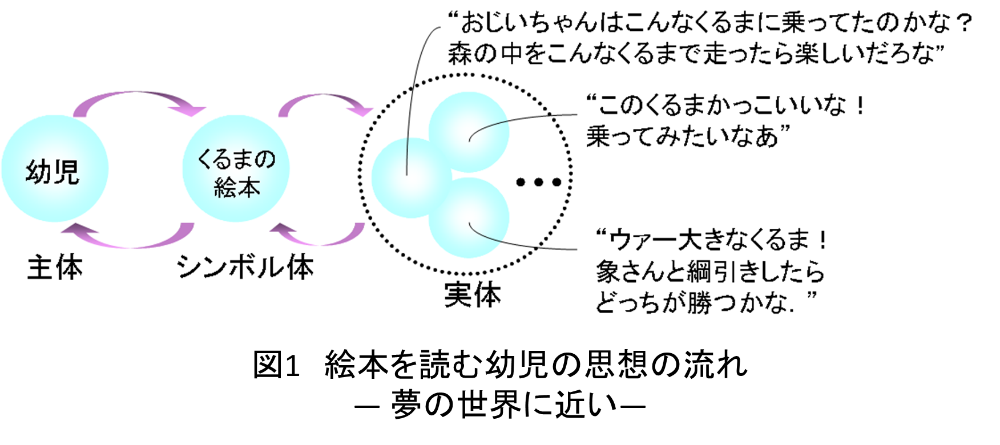
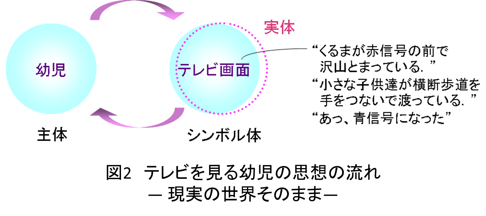
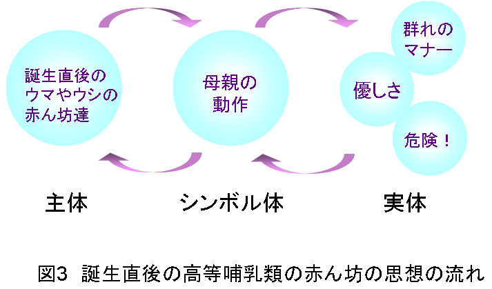
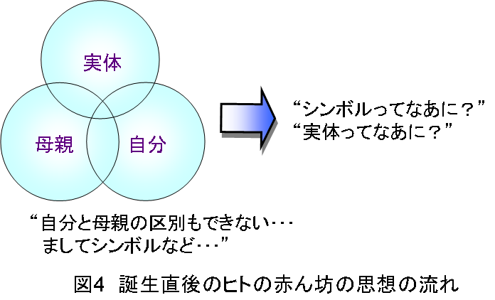
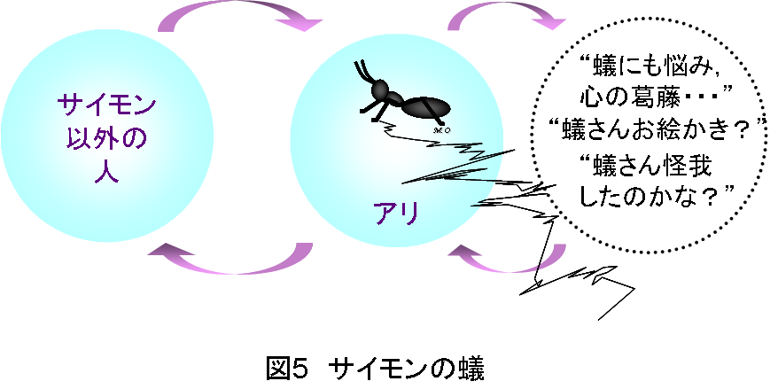
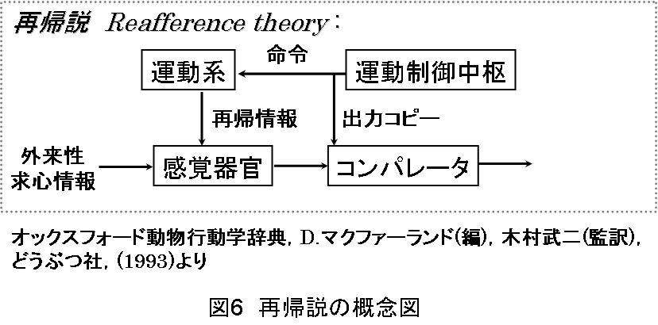
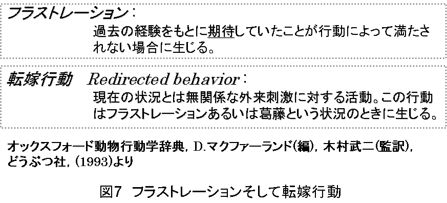
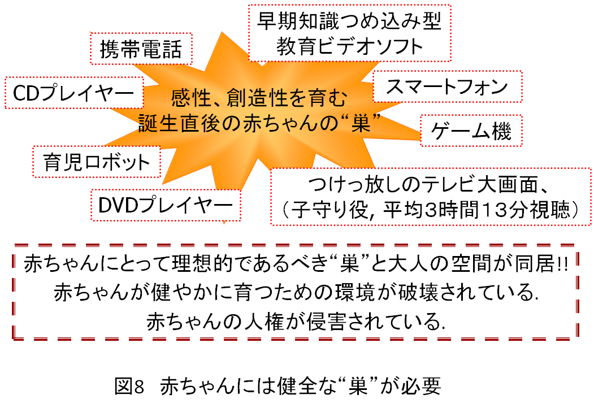

このお話、まずは幼児と絵本の世界のお話から始めてみましょう
絵本の世界は、1～3歳の幼児にとって象徴化能力、感性、創造性、あるいは努力持続性などを育む上でとても大切な空間です。絵本はじっとして動かない静止画の世界ですよね。乳幼児達はこの静止画を心の中で連続的な動きのあるアナログのシーンに置き換えて頭の中にいろいろの風景を描いていきます。
絵本の世界は、ゼロ歳児のころに住んでいた世界、つまり誕生後に経験した長い睡眠の中で見た豊かな夢の世界に近いのです！
幼児を優しく迎える絵本の世界は、現実の世界から夢の世界に橋渡しをしてくれる心地よい空間でしょう。幼児達は、図1に示しましたように
幼児→絵本→実体→幼児→絵本→…
という繰返しの中で遊びます。同じ内容の絵本であっても、繰返し繰返し飽きることなく読み、父や母に読んでもらうことに大きな喜びを感じます。そしてこの繰り返しによって、幼児に豊かな感性、創造性、努力持続性等が育っていくのです。
米国の文明評論家、マンフォード先生が、ヒトがホモ・サピエンス（理性ある人）に進化した最大の理由として、ヒトが眠りの中でみる夢の効果をあげていることに注目したいと思います。


幼児とテレビの世界
絵本の世界に対しテレビの世界は、多くの場合図2に示すように現実に限りなく近いリアルな世界です。ぼっと外を眺めているときに目に入る動きのある景色です。
このリアルな世界は子供にとって、シンボル体がすなわち実体であるために、いわば鵜呑みの世界です。このように理解しましょうというシーンが、ありのままに目の前に展開されていくのですから。
自閉症児、健常児の統合教育に取り組まれる牧師、江川先生によれば、“テレビは決して心を育てるものではない。母親が不在であるかのように子供が母親に関心を示さなくなった場合、テレビから子供を取り返すことは非常に困難なこと”とおっしゃっていました。
江川先生のこの警告に対しては、今日であればテレビをゲーム機に置き換えて、耳を傾けることができるでしょう。
テレビの大型化、ハイビジョン化そして将来の3次元テレビは、現実世界をリアルに再現するという意味において、ラジオ、そして昔の白黒テレビ等に比較して“現実世界に対する非象徴化”を益々進展させています。
マンフォード先生のいう夢の世界、眠りの中でみる夢の世界とはほど遠い世界です。
乳幼児の生活の場にテレビ画面がつけっぱなしになっていると、乳幼児の目や耳はテレビ画面に向くでしょう。そこに待っている世界は夢の世界とはほど遠いリアルな世界です。
こんなことを考えますと幼児用アニメは、紙芝居風に工夫して乳幼児達に想像の部分を沢山に残してほしいと思います。
人類が数百万年もの長い間経験し、積み上げてきた育児環境の中に突然飛び込んできた現実そっくりのテレビ画面。幼児がこのテレビ画面を1日に何時間も視聴することは大きな危険と隣り合わせでしょう。
この時期は幼児にとって、将来、社会人として受け入れてもらうために必須となる感性、創造性、努力持続性等を発達させなければならないとても大切な時期なのですから。
乳幼児がつけっぱなしのテレビに長時間接することが、どうして良くないの？ この問いかけに関する限り、私は科学的根拠に基づく理由を細々（こまごま）と述べることに反対します。
まして国からの補助金を受けて乳幼児の頭に電極をつけて、テレビを視聴させ、その効果を実験的に確かめるなどといったことに反対です！
このような暮らしの中の身近な問題に、どうして科学の力を借りなければならないのかという大きな疑問です。親としての直感的な判断が優先されるでしょう。
つまり、赤ちゃんが子守役としてのテレビを赤ちゃんだけで長時間視聴することは良くないのではないか、という直感的な判断が優先されると思います（NHKが2004年11月5日に放映した番組『子供とテレビ』によれば、日本人赤ちゃんの平均視聴時間は1日当り3時間15分といいます）。
しかし、“危険と隣り合わせです！…親としての直感ですけれど…。”という回答では、余りにも説得力がないことを私は日頃色々な場で痛感しています。そこで以下では敢えて科学的な立場からの解説を試みましょう。
ヒトの赤ん坊は子宮外胎児です！
スイスの動物学者ポルトマン先生が指摘しましたように、高等哺乳類の中で例外的に、ヒトの赤ん坊は、子宮外胎児と呼ばれる存在です。高等哺乳類の赤ん坊は、ヒトに近いサルを含めて共通に、巣を必要としない離巣性であるのに対し、ヒトの赤ん坊は“胎児”であって、ネズミ等の下等哺乳類の赤ん坊に近い就巣性なのです。ヒトの場合には“胎児”が健やかに育つことができる理想的な“巣”がぜひとも必要です。
高等哺乳類の赤ん坊とヒトの赤ん坊の間には図3と図4に示すような大きな差があります。高等哺乳類の赤ん坊はシカやウマの赤ん坊に見られるように、誕生直後に母親の表情を見て、“危ないの？ 怖いことが起こるの？”、“群れのマナーなんだね”、“甘えてもよいのね”などなど、その意味するところ（実体）を悟ることができます。自分、シンボル体、実体の分離が誕生直後にしっかり確立されています。


これに対し、ヒトの赤ん坊の場合は、図4を見ていただくと明らかなように、自分、シンボル体、実体の分離がなされていません。つまり自分自身と母親の区別すらできないのです。この時点ではヒトの赤ん坊においては“時”の流れ、そして“近さ、遠さ”の認識はなく、時間も空間もほとんどポイントとして存在するだけでしょう。
ヒトの赤ん坊の脳は、まわりの大人の協力により、点としての“時”と“空（くう）”とを広げていき、“時”の流れとしての時間と“空（くう）”の広がりとしての空間の認識が可能になるのです。宇宙の誕生時と同じような変化、つまり時間の拡がり、空間の拡がりが赤ん坊の心の中に起こっていることが強く推測されます。このことへの大人の理解と協力がぜひ必要です。
誕生直後のヒトの赤ん坊の場合、他の高等哺乳類とは異なって、乳房を求めて自から動くといったことは全く無理なことです。つまり他動物とは違って、口唇以外の随意運動は不可能です。赤ん坊の口に乳房をもっていってあげないとだめなのです。
しかし赤ちゃんの脳は私達大人の想像以上に活発に機能しています。赤ちゃんの脳は能動的にまわりの状況を手探りで模索し、自分、シンボル体、実体を引き離す作業、つまりウェルナー先生、カプラン先生のいう“距離化”に励んでいます。誕生後の1ヶ月、殆ど目を閉じたような状況の中で、活発にあたりの状況を模索しています。
生後半年、赤ちゃんは視力に乏しく不鮮明なぼんやりした世界しか認識できません。目の前の状況をかすんだ状態でしか観察できない中で、生後0～3ヶ月の赤ちゃんの脳が追い求めているものは何でしょうか。それは丸い形のもの、つまりヒトの顔に近い画像であるに違いありません。
赤ちゃんは、ぼんやりとしか目に映らない顔画像への注視、あるいは自発的微笑（生後間もない赤ちゃんが意味もなく笑っているように観察される微笑）等をこころみます。このことへの反応つまり“丸い形”に心地よい変化があれば、脳は、とても勇気づけられます。
赤ちゃんの脳は、確かな期待通りのレスポンスを観測することによって励まされるでしょう。そしてこのことを励みにして周囲の人の顔の認識をより確かなものにしていくと推測されます。
この自発的微笑は社会的微笑の準備運動として考えられていますが、この自発的微笑は胎生期の32～35週にピークがあるとされています。私達人間は誕生する前から社会参加への準備を始めているのです！
映画『ジョーズ』にも登場する巨大なホホジロザメは、胎生期において何十匹もの兄弟を共食いし、最後に生き残ったたった一匹の勝者が生れてくるといわれています。恐ろしいことですね。サメは捕食行動を誕生以前に準備して生れ、ヒトは社会参加への準備を誕生以前に行って生れる！ 重く、重く受けとめねばならない事実ですね。
赤ちゃんは大人からの働きかけを待つという受身の学習をしているのではなく、自らのもって生れた行動、つまり自発的微笑などなどを試み、大人からの適切な反応、適切な回答を待っています。適切な応答を得ることによって能動的行動の妥当性を知ることができ、大きな励みになるでしょう。
赤ちゃんからの問いかけに対する回答は、携帯電話、スマートフォン、テレビ等々のメディア、あるいは他のことに気をとられている大人の顔、そして子守役として与えられているテレビ画面からは、何一つ返ってこないでしょう。能動的働きかけを一生懸命こころみる赤ちゃん達の人権は一体どうなるのでしょう。
バーンシュタイン先生の理論が教えること
ヒトの脳は外界からの刺戟を受けて反応するというパブロフ先生の条件反射理論は、広く知られています。刺戟受容体であるヒトの脳に対しては刺戟を与えつづけることが、結局、ヒトの成長につながるという考えです。
このパブロフ先生の理論に対し、20世紀中頃バーンシュタイン先生は、動物の脳の本質は能動的に環境を探索することにあるとしました。道免先生によればパブロフ理論に対するバーンシュタイン先生の理論は、当時のソ連の人間観に反するとして、プラウダ紙に批判されたということです。そして職をも失ったそうです。
パブロフ先生とバーンシュタイン先生の理論を、以下の世代を切口にして、比較してみましょう。
- （I)乳幼児：
- 能動的働きかけの旺盛な乳幼児においてはバーンシュタイン先生の理論が明白にあてはまります。
- （II）大人：
-
パブロフ先生の考えは大人にあてはまるように思われます。何故なら大人は、日常生活の中で映画館、音楽会会場、野球場…に足を運んだりして、ひたすら受身での姿勢で刺戟を受けつづける存在にもみえるからです。“野球でも見に行って刺戟を受けたい！”などと言うではありませんか。
このため、後ほど説明させていただく“サイモンの蟻”の心理で、大人達は乳幼児世代ほか全ての世代を大人と同様、刺戟受容体であると考えてしまうことになるでしょう。つまりすべての世代をパブロフ先生の目で見ることになるでしょう。
バーンシュタイン先生の考えは、後で説明させていただく「再帰説」に深いところで繋がっていますが、乳幼児においてはバーンシュタイン先生のいう能動的に環境を模索するという姿勢が、刺戟を受容しつづける受身の姿勢に比べて明らかに遥かに強いと思います。
大人は、パブロフ先生の考えをより自然な考えとして捉えてしまう可能性があります。このため、大人は大人の視点に立って、乳幼児にも一方的に刺戟を与えつづける、例えばカラフルなテレビを一方的に見せつづけたとしても、赤ちゃんにとっては大きな刺戟となり、この刺戟によって脳が成長すると考えてしまったりします。
大人の目ではなく、赤ちゃんの目になってテレビを見ることは非常に難しいのです。赤ちゃんの立場で考えてもらえない赤ちゃんの人権はどうなるのでしょう。
後ほど、テレビを見る赤ちゃんの気持が、本当はどんなものであるかについて、具体的にお話をしてみましょう。
サイモンの蟻：

図5に示したように、砂漠のような道を歩む蟻のあとにできる軌跡を、ノーベル経済学賞を受賞したサイモン先生は、経済の世界の歩みと見てしまいます。蟻はその場、その場の地形に合わせて機械的に歩んでいるに過ぎないのですが、サイモン先生は経済の世界も蟻の歩みと同じで、その時点、その時点で一番良いと考えられる選択を試みているにすぎない、決して遠い目標に向かって一直線に進むわけではない、と考えます。
サイモン先生以外の大人たちは、砂地に残されていく蟻の歩みの軌跡を見て、蟻にもきっと悩みがある、心の葛藤がある、などと考えたり、蟻の歩んだ跡を自分の人生の歩みと重ね合わせてみたりするでしょう。
幼児、小学生の場合は、“蟻さん、お絵かきしている！”、“蟻さん、怪我したの？”などなど、いろいろ想像力を働かせて見ることでしょう。
数ヶ月の乳児であれば、蟻に気づいても軌跡には全く関心がないでしょう。
このように、“サイモンの蟻”は、観測者の年齢、経験などによって目の前に現れる対象（シンボル）を非常に異なった観点からとらえることを教えています。テレビ画面についても決して例外ではありません。テレビ画面を大人の目で見ることは大きな危険と隣り合わせなのですが・・・・
20世紀後半から今世紀にかけて急速に発達した情報技術の成果としてのハイビジョン映像を1歳に満たない乳児が1日3時間以上見ている姿を見て、大人の側から
- 結構楽しんでいる
- カラフルな動きのある映像を見て脳が刺戟を受け、脳の血流が活性化され、何もさせないよりは知能の発達が促される
等々の見方をしがちです。筆者がアンケートなどによって調べた結果では、半数近くが乳幼児の目ではなく大人の目で、子守がわりのテレビが赤ちゃんの脳の発達を促すという意見を述べています。乳幼児の心を百パーセント大人の物差しで測っていることを示す結果となっています。これは本当に悲しい結果です。
心理学者ピアジェ先生は、子供を大人の目で見るのではなく、子どもの目になって物事を見つめ、そして判断することの大切さを強調しました。20世紀を代表する科学者の一人とされるピアジェ先生の言葉に私達はあらためて耳を傾けねばならないと思います。赤ちゃんの人権を守るために。
コミュニケーション空間の“間”
心理学者の吉田先生は、文化人類学者ホール先生のコミュニケーションに関する研究を紹介する中で、コミュニケーションという立場から考えた対人距離には以下の4種類の距離があると述べています。
- 密接距離：
- 例えば、子育ての中の母親と胸に抱かれた赤ん坊との距離
- 個体距離：
- 例えば、親しい友人との間で会話をする距離
- 社会距離：
- 例えば、初対面の来客に対して応接係が会話を交わす距離
- 公衆距離：
- 例えば、教室内での教師と学生との間の距離
です。
私が、京都工芸繊維大学、大阪学院大学ほか幾つかの大学で、学生諸君にこれらの距離を具体的のどのくらいと考えるかについて質問しましたところ、
- 密接距離 ： 50cm程度以内
- 個体距離 ： 100～150cm程度
- 社会距離 ： 150cm程度～数m
- 公衆距離 ： 数m以上
のような回答を得ました。ほぼ全員の回答がこうなっています。どうして皆さん同じように考えるのでしょう。不思議ですね。
このアンケート結果より、コミュニケーションには相手との “間” が基本的に重要な役割を果していること、そして多くの人がこのことを認識し、しっかり感覚として “間” を身につけていることが分かります。
誕生直後の赤ちゃんと母親の間には、以下に述べるような豊かなコミュニケーション空間 が形作られています。
- 授乳時の母子の姿勢が他の高等哺乳類に比べ優位な位置にあります。コミュニケーションの場における密接距離にあります。
- 正高先生によれば赤ちゃんに固有の行動の一つとして授乳時に一定周期での休止期間をおきます。そしてこの休止期間にクーイングと呼ばれる喃語以前の発声がなされ、母子とのコミュニケーション空間が豊かにされています。
私達は誕生直後より、“間”のとり方を学んで社会人となります。テレビ画面に登場する人物と接し続ける赤ちゃんは、将来、社会人として生きていく上で大切な“間”を学ぶことができず、社会人として成長する際に大きなハンディを背負わされることとなるでしょう。社会人として必要な“間”が十分に学習できない赤ちゃんの人権はどうなるのでしょう。
コミュニケーション空間形成への赤ちゃんの働きかけ
ヒトの赤ん坊は運動機能が未発達で、大人、特に母親とのコミュニケーション空間を赤ん坊の側からはうまく構築できないように思われます。しかし、ヒトの赤ん坊は非常に鮮明な形で社会性を示す生得的な振舞いをし、このことが大人、特に母親との間に豊かなコミュニケーションの場を作っています。
生後間もない赤ちゃんに見られる行動の中で、社会性を強く感じさせる振舞いがあることは、広く知られています。代表的なものは
- 模倣
- 自発的微笑
- 相互作用の同期性
- クーイング、喃語
で、誕生直後に出現します。
1．の模倣とは誕生後間もない新生児に向かって、大人が手をポンポンと叩いたりすると、偶然とは考えられない高い確率で赤ちゃんも同じような動作をすることをいいます。なお、生後間もない赤ちゃんの大脳皮質は未発達で学習能力は備わっていません。 したがって「模倣」という用語は必ずしも適切ではないでしょう。
2．の自発的微笑とは、前述のように生後間もない赤ちゃんが、意味もなく笑っているように観察される微笑で、社会的微笑の準備運動として解釈されています。
しかし、私見ですが準備運動という解釈は必ずしも正しくないと思います。
お父さんやお母さん、回りの人達からの心地よい反応を期待して、赤ちゃんの脳は“ほほ笑みましょうね”という命令を出しているに違いありません。そしてその結果回りの人からの“あっ笑った！”というはずんだ声、あるいはホッペやお尻をポンポンと叩いてくれることを赤ちゃんの脳は、期待して待っているに違いありません。
3．の相互作用の同期性とは、もともと大人同士の会話の場面で、相手の発声する音節、 単語等に合わせて身体が動く現象のことです。
佐藤先生は大人に見られる相互作用の同期性が、誕生後間もない赤ちゃんにも認められると指摘しています。母親の声に極めて正確に同期をとって動く赤ちゃんの行動は、社会に参加することを願望する能動的な行為であると考えられています。
4．のクーイング、喃語もまた赤ちゃんにとって大切なコミュニケーションの道具です。生後間もない赤ちゃんから発せられるクーイングそして喃語が大人との間に形づくられるコミュニケーション空間を非常に豊かにしていることに注意しなければならないと思います。
喃語は言語音声発声の準備運動としてとらえることができると解釈されてます。しかしやはり私見ですが、その目標はコミュニケーション空間を豊かにすることにあると思います。
文献『脳の学習力』（S.J.ブレイクモア， U.フリス（著）， 乾敏郎， 山下博志， 吉田千里（訳）， 岩波書店）に
「耳の聞えない赤ちゃんは手で喃語を話す」
という見出しのもとに喃語についての注目すべき記述があります。以下に要約しましょう。
“耳の不自由な両親の間に生れた耳の聞えない生後10～14箇月の赤ちゃんが両親と同じように手話に似たようなことをしている例がカナダのマギル大学の研究者によって報告されている。さらに2004年に発表された彼らの研究では耳の不自由な両親の間に生れた耳の聞える赤ちゃんも手で喃語を話している”
声で通じなければ手話に訴える赤ちゃんの脳の不思議な仕組。喃語の主目標が大人とのコミュニケーションにあることを明白に示す記述ですね。
上記にある“耳の不自由な両親の間に生れた耳の聞える赤ちゃんが手話に似たようなことをする”という内容は、いわゆる転嫁行動と考えられます。後ほど再びとりあげてみたいと思います。
テレビ画面に対して喃語で懸命に語りかける赤ちゃんに誰がこたえてあげるのでしょう。コミュニケーションの道を閉ざされる赤ちゃんの人権はどうなるのでしょう。
再帰説が教える乳幼児環境の大切さ
夢から目覚めた誕生後0～2ヶ月の赤ちゃんの前に、母親があらわれたとしましょう。視力に非常に乏しく、ぼんやりとしか見ることができない赤ちゃんの目は、ゆっくりと動く“丸いもの”を本能的に追い求めます。赤ちゃんの脳は、この丸いものに自発的微笑すなわち“微笑みましょう”という命令を筋肉に指令すると同時に、母親から返される笑顔が、“丸いものの心地よい変化”となって現われることを予測し、さまざまな（心地よい）変化を事前に準備します。
脳にとって命令が“シンボル”であり、未受信の母親の顔の形のさまざまな心地良い変化が“実体”となって脳に準備されています。なお、文献『オックスフォード動物行動学辞典』（D.マクファーランド（編）， 木村武二（訳）， どうぶつ社、では実体のかわりにコピーという用語が使われています。
さて、目や耳の感覚器官を経て僅かな時間遅れで赤ちゃんの脳に到達する外来性求心情報としての丸いもの、つまり母親の顔形の変化と、あらかじめ準備されていたコピー（丸いものの心地良い変化）との間に大きな差がなければ、赤ちゃんの脳は、筋肉に出した“ほほ笑みましょう”という随意運動を促す命令が着実に実行されたことを知って、（赤ちゃんの脳は）安心します。
これとは反対に図6に示した出力コピーと外来性求心情報に差がある場合、つまりお母さんの顔だと思った丸い形に何の変化もない場合、あるいは赤ちゃんの脳にとって予想外の変化、例えばテレビ画面に写し出され、お母さんだ！と思って期待した“丸いもの”が急に三角形や四角形に変身したり、あるいは爆発して消えてしまうといったことが起きた場合、これらの入力信号は再帰的情報ではないと判断します。
このような脳の“期待”を満たさない外来性情報の連続はヒトのみならず他の動物一般に対しても、フラストレーションの状況に追い込んでしまいます。フラストレーションのキーワードは“期待”であることに注意しましょう。


過去の経験に基づく“期待”が満たされないとき、脳はフラストレーションの状況に陥ってしまいます。図7に示すようにフラストレーション蓄積の状況を脱出しようという赤ちゃんの脳の試み（現状打開策）は、
- 外来性刺戟を無視した思い切った行動（大人の側からは想像できない行動）を運動系に命じて、状況を大きく変化させ、フラストレーションの状況を脱出できるか否か試してみます。
- “外来性情報は全て期待外れ情報となる”と判断し、この状況から逃れるため、善悪全ての外来性情報を拒絶し、例えば“見ない”、“聞かない”、“言わない”といった能動行為を停止する行動に出て、フラストレーションの状況から脱出することを試みます。
といった結果につながるでしょう。
以上のように、フラストレーションの蓄積は外来性刺戟とは無関係な行動、つまり転嫁行動（redirected behavior）として、暴力、沈黙となってあらわれるあるいは場合によっては期待通りの良い方向への展開等々となってあらわれ得ます。
転嫁行動は現状を打開するためにとられる脳にとっての最後の手段と解釈することもできるでしょう。先に述べた事例をここでもう一度考えてみましょう。
耳の聞える赤ちゃんが、耳の聞えない両親に対し喃語による懸命のコミュニケーションが期待外れに終ったために、フラストレーションの状況に陥った赤ちゃんの脳は、現状打開のため口のかわりに手を動かすことを命ずるでしょう。この転嫁行動が、日常、手話を使用している耳の聞えない両親によって見逃されることはないでしょう。
テレビの大型画面あるいは他のことに気をとられている母親に対し、喃語によるコミュニケーションが通じないと判断した赤ちゃんは、手足でコミュニケーションを試みるでしょう。しかしほかのことに気をとられている大人達はこの行為を理解するでしょうか。テレビ画面はこの転嫁行動に気付くでしょうか。カラフルなテレビ画面を見て、手足をばたつかせて喜んでいる、話しかけていると、大人は解釈するのではないでしょうか。

図8に示しましたように、本来就巣性であるが故に健全な“巣”が与えられねばならない乳幼児とつけっぱなしのテレビの関係、あるいは授乳中携帯電話、スマートフォン等々に夢中になる母親の姿勢はどんな結果をもたらすでしょう。
社会人になるための準備をしなければならない大切な時期に一方的にテレビを見せられる、あるいは携帯電話、CD、DVDプレイヤー、携帯型音楽プレーヤ（例えばウォークマン）等に夢中になっている大人から適切な反応が得られない、という赤ちゃんの置かれている現状。
コミュニケーションの道を閉ざされている赤ちゃんの人権はどうなっているのでしょう。
子守がわりのテレビを一人で眺める赤ちゃんの気持ってどんな気持？
この問いかけに答えることはとても難しいことでしょう。私達はもはや赤ちゃんには戻れないからです。でもほとんど正確にその気持を推測することはできます。以下のような状況を考えてみましょう。
階段をかけおりてみましょう。全然目まいしませんよね。では今度は額に高性能カメラをつけてもう一度階段をかけおりてみましょう。そしてそれをハイビジョン影像で何回も眺めてみましょう。
めまぐるしく変化するテレビ画面を見ているうちに気分が悪くなり、吐き気をもよおしますよね。あなたが階段からかけおりたときに、あなたの目がしっかりとらえていたのと同じシーンであるはづなのに！！
以上の状況をアルゴリズムの形で整理し書き直してみましょう。
- ステップ1：脳は全身の筋肉に全力で階段をかけおりることを命令
- ステップ2：脳はこの命令と同時に筋肉の動きに応じて感覚器官（目）から飛び込んでくるであろうシーン（コピー）を、一瞬早く脳内に準備して、肉体の動きに対して備える。
- ステップ3：一瞬の遅れで司令塔たる脳に飛び込んでくる実際のシーンとあらかじめ脳内に準備していたコピーとを比較する
- ステップ4：一致すれば、司令塔たる脳は安心し、ステップ1に戻って、ひきつづき階段をかけおりる命令をくり返す
- ステップ5：不一致の場合、かけおりることを停止させる命令を筋肉に出すと同時に停止にいたるシーン（コピー）を準備する。そしてステップ1に戻る。（その後は全身の筋肉に停止することを命令しつづける
ハイビジョン影像を座って眺めている場合、脳は筋肉に全く命令を出していないのに、ステップ3のシーンが感覚器官（目）から次々と送り込まれてくるのですから、脳はたまったものではありません。大きなストレスを感じ目まい吐き気という結果につながるでしょう。
生後間もない赤ちゃんが本能的に追い求めているものは、ただただ母親の顔らしい“丸いもの”でしょう。視力に乏しい赤ちゃんがやっと見付けた“丸いもの”への働きかけに、テレビ画面にアップで写しだされたタレントやキャスターはこたえてあげることができるでしょうか。
子守役のテレビを見る赤ちゃんの気持は、こんなふうに推測できる
はっと息を飲む紅葉の山々の遠景。ズームアップで次第に近づいてくる・・・・・。あっ！ 滝だ。滝が見える。紅葉の中に滝が見事に溶け込んでいる。うわっー、滝がどんどん近づいてくる。凄い水しぶきがスクリーンから飛び出してきそうだ。危い！ 危い！ 危い！ 滝の中に飛び込んでしまう！
あなたはこのようなシーンをテレビで見たことがないでしょうか。カラフルな風景を楽しみ、心地よいスリルも感じますよね。あなたの脳はフル回転して実際のシーンが目に飛び込んでくる一瞬前に、脳の中に予想シーンを次々と準備して待っています（このような脳の働きがないと人は、取っ組み合いはおろか歩くことすらできなくなるのです！）。
経験豊かな大人は、紅葉の山々、滝、ズームアップの意味、全て脳の中にインプットしています。この豊かな経験があるからこそ脳は、目や耳などの感覚器官から送られてくるはづの実際のシーンを一瞬早く予想して待っていることができるのです。
予想したシーンと実際のシーンが一致すれば脳は安心します（美しい景色そしてスリルを楽しむことができます）。
赤ちゃんの場合はどうでしょうか。生後二、三か月の赤ちゃんの脳は、紅葉も滝も、ズームアップの技術も知り得ません。脳は感覚器官から送られてくるであろうシーンを全く予想することができず、ストレスを感じつづけるでしょう。
脳はこのストレスから解放されるために
- 手足の筋肉をばたつかせて事態が改善されるか否か確かめるでしょう。
- 泣いたり大声で話しかけさせたりもするでしょう。
- しかし万策尽きた脳は、耳や目からの入力を拒否できるよう眠りにつくことを命ずるでしょう。
- “見ないでおきましょう”という脳の促しによって眠りについた赤ちゃんを見て大人たちは子守役のテレビが見事に役割を果たしてくれたと喜ぶでしょう。万策尽きて眠りについた赤ちゃんの脳は、どんな夢を見ているのでしょう。
むすびにかえて
我が国の赤ちゃんの現状について訴えました。勿論このお話をお読みになって“おじいちゃんやおばあちゃんそれにお兄ちゃんお姉ちゃんにも囲まれて大切に育てられている赤ちゃんが沢山いる”という反論があるでしょう。
しかし本稿で訴える情況にある赤ちゃんが例えひとにぎりであったとしても、これは大きな人権問題と思います。そして同時に、たった一人で子育てに励む母親を何らかの形で救済すべきことを真剣に考えねばならないことを私達に要求するでしょう。国はこのことを十分に承知しているのでしょうか。
テレビを子守がわりにする赤ちゃん、そして一日中育児に追われて、そうせざるを得ないお母様方を救うために、私達はできる範囲で努力しなければならないと思います。
改めて国へのお願い
一人で子育てに励むお母さんたちを支援するために、そして赤ちゃんの人権を守るために、国は真に中身のある支援、（単に現金を一律に支給するといった形ではない）きめ細かい支援を早急に取り組んでいただくことを衷心よりお願いします。
参考文献
本文章を執筆するにあたり参考にさせていただいた文献を以下に記載します。
- 笠原正雄：『情報技術の人間学』， 電子情報通信学会， コロナ社（2007）．
- 笠原正雄：“人はコンテンツの時代を如何に生きるか -- 現コンテンツ環境を踏まえ，テレビと赤ちゃんの関係を切口に，将来を考える --”， 信学技報， SITE2010-45(2010-12)．
- 江川博和：『言葉はいのち--自閉症児と豊かに生きるために』， キリスト新聞社(1992)．
- H.ウェルナー， B.カプラン， 『シンボルの形成』， 柿崎祐一（監訳）， ミネルヴァ書房， 1974．
- 仲渡江美， 小林恵， 山口真美：“乳児の顔認識における脳活動について”， 電子情報通信学会誌， Vol.92， No.1， pp.61-66(2009-01)．
- 高橋道子：“ほほえみの発達”， 赤ちゃんウォッチングのすすめ， I-3， 別冊『発達』， 正高信男（編），ミネルヴァ書店(1996)．
- 道免和久：“運動反射と制御理論”， http://www.bekkoame.ne.jp/domen/reflex.html
- 吉田富二雄， “個人空間”， 数学セミナー， Vol.34， No.11， pp38-39(1995)．
- D.マクファーランド（編）， 木村武二（監訳）， 『オックスフォードどうぶつ行動学辞典』， どうぶつ社， 1993．
- 正高信男， 『0歳児がことばを獲得するとき』， ちくま新書(1995)．
- 榊原洋一， 『ヒトの発達とは何か』， 培風館(1995)．
- 佐藤眞子（編）， 『乳幼児期の人間関係』， 培風館(1995)．
- S.J.ブレイクモア， U.フリス：『脳の学習力』(2005)， 乾敏郎， 山下博志， 吉田千里， 岩波書店(2006)．